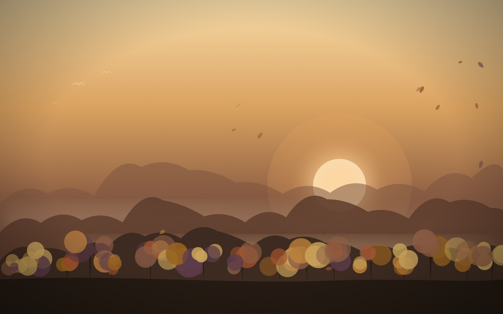
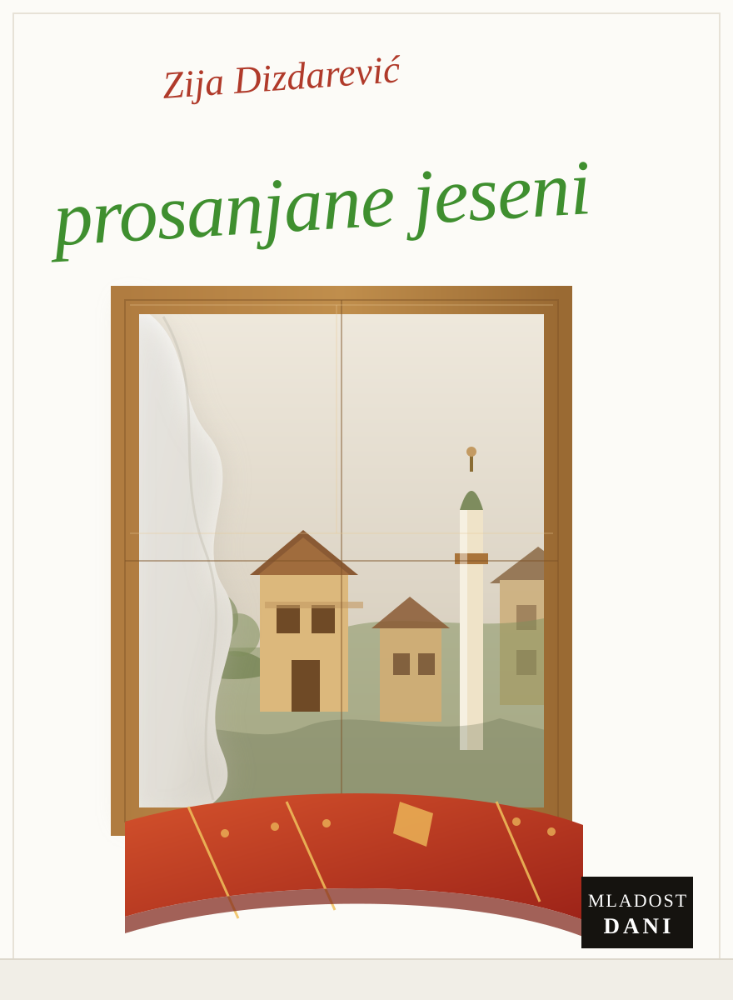

Uvod
O projektu
Dobar dan, mi smo treća grupa i mi smo imali 6 pitanja koja smo detaljno obradili, kao što smo napravili i web stranicu kao i kviz.

Naslovnica knjige „Prosanjane jeseni“.
Šest pitanja
Pitanja na koja odgovara 3. grupa
Svako pitanje ima zasebnu stranicu. Odgovori, citati i analize unose se onako kako ih grupa napiše — bez prepričavanja i bez dodavanja teksta kojeg nema u djelu.
01Pitanje
Dizdarevićeva slika ljudi
Književna slika ljudi u djelu: kako su opisani, kako izgledaju i šta njihov opis govori o svijetu u kojem žive.
Otvori stranicu
02Pitanje
Mentalitet bosanskog čovjeka nekad i sad
Poređenje mentaliteta nekad i danas, s primjerima iz djela i citatima koje grupa izdvaja.
Otvori stranicu
03Pitanje
Toksični odnosi među ljudima
Određenje pojma, glavne karakteristike i povezivanje s odnosima prikazanim u djelu.
Otvori stranicu
04Pitanje
Kako Zija Dizdarević portretira majku
Majka kao lik: njen portret, postupci, riječi i mjesto u porodici prema tekstu djela.
Otvori stranicu
05Pitanje
Majčin položaj u kući i društvu nekad i sad
Položaj majke u kući i porodici: citati iz pripovijetke „Majka“ i poređenje nekad i danas.
Otvori stranicu
06Pitanje
Položaj žene nekad i sad
Položaj žene kroz likove kćerki, sestara, djevojaka i majki — s citatima iz pet pripovijedaka.
Otvori stranicu
Kreni od prvog pitanja
Odgovor 3. grupe na prvo pitanje posvećen je slici ljudi u djelu.